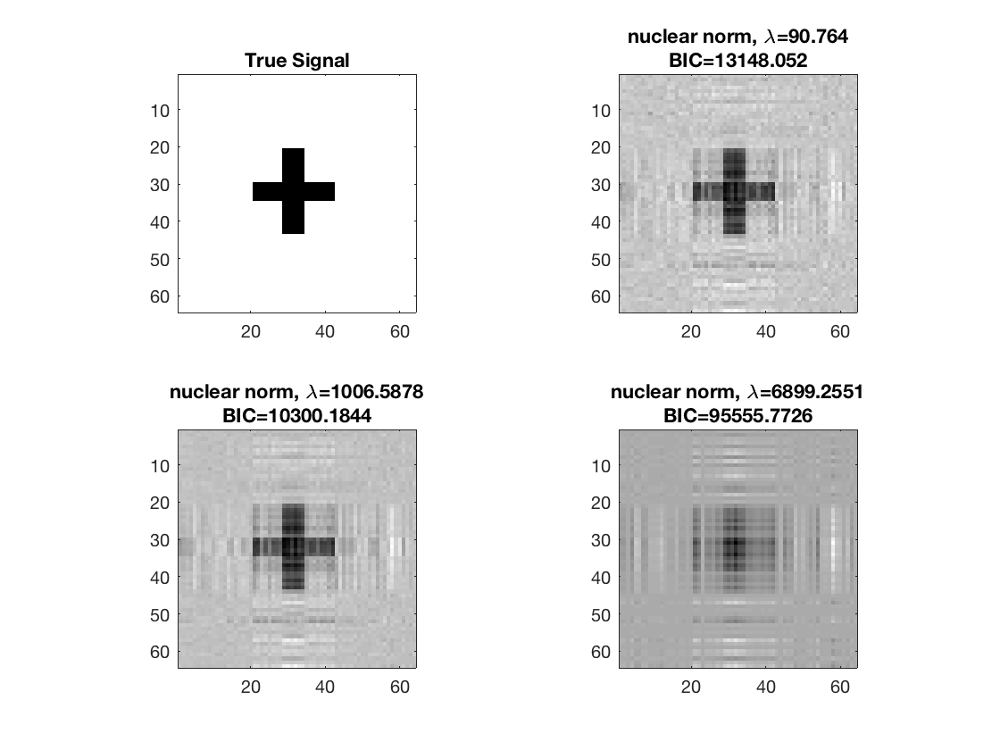
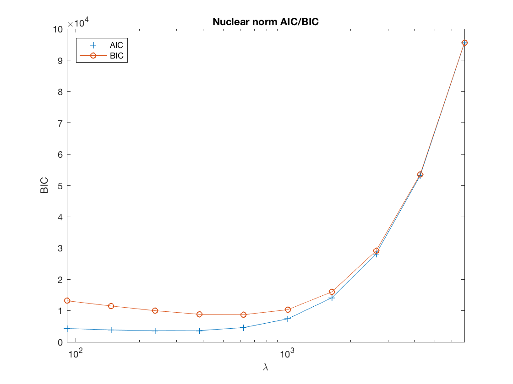
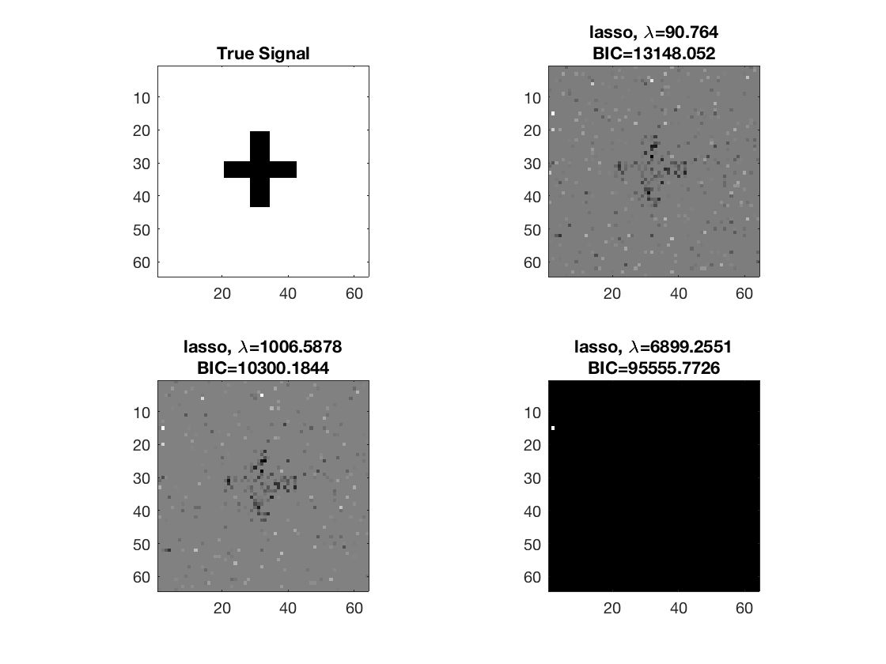
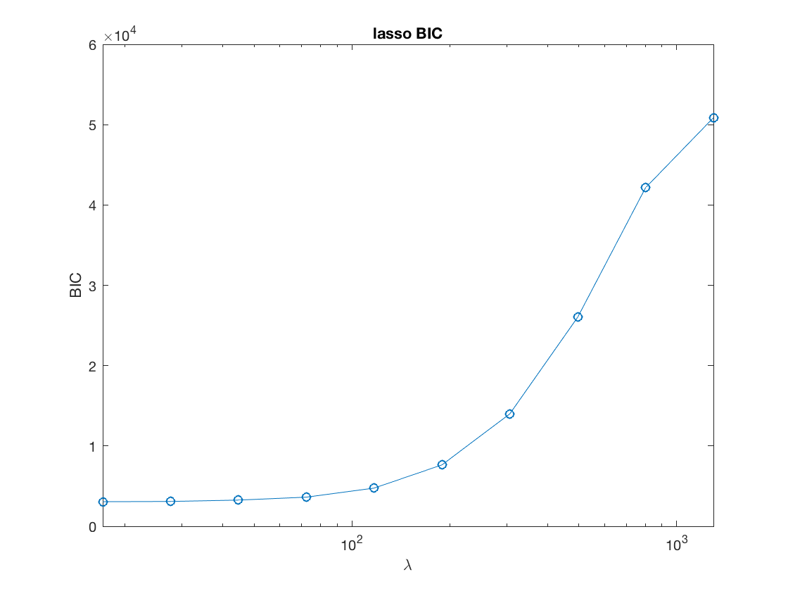
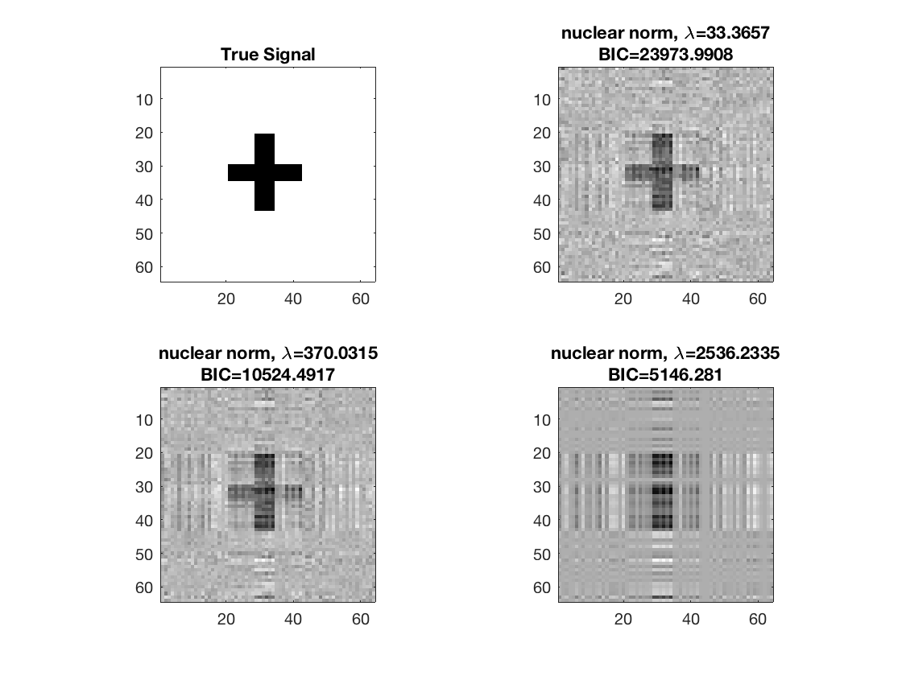
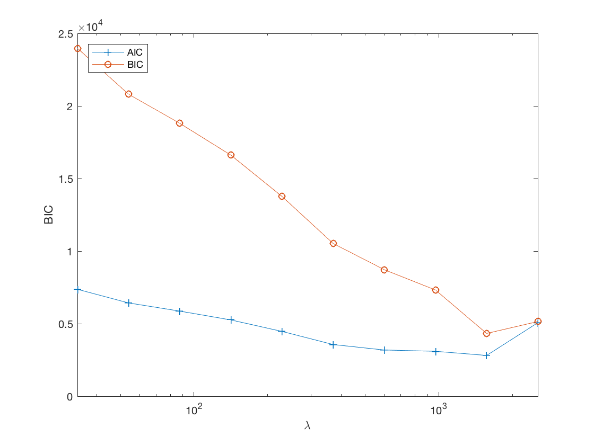
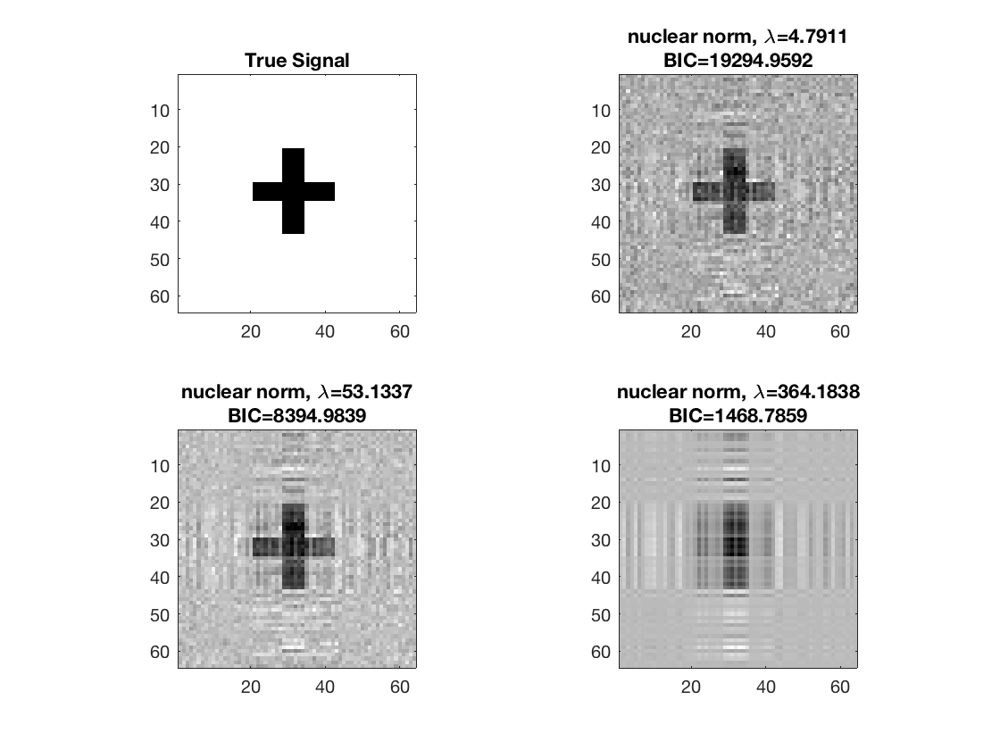
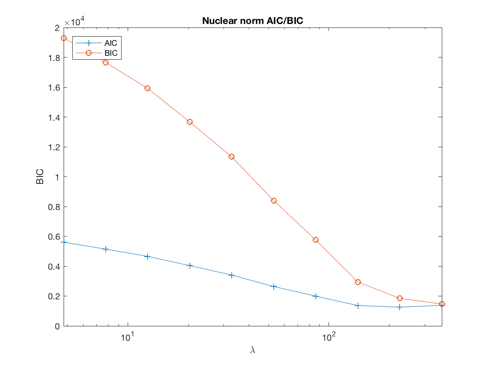

Contents
Regularized matrix linear regression
clear; % reset random seed s = RandStream('mt19937ar','Seed',2); RandStream.setGlobalStream(s);
True coefficients for regular (non-array) covariates
p0 = 5; b0 = ones(p0,1);
2D true signal: 64-by-64 cross
shape = imread('cross.gif'); shape = array_resize(shape,[32,32]); % 32-by-32 b = zeros(2*size(shape)); b((size(b,1)/4):(size(b,1)/4)+size(shape,1)-1, ... (size(b,2)/4):(size(b,2)/4)+size(shape,2)-1) = shape; [p1,p2] = size(b); disp(size(b));
64 64
Simulate covariates
n = 500; % sample size X = randn(n,p0); % n-by-p0 regular design matrix M = tensor(randn(p1,p2,n)); % p1-by-p2-by-n matrix variates disp(size(M));
64 64 500
Simulate responses
mu = X*b0 + double(ttt(tensor(b), M, 1:2));
sigma = 1; % noise level
y = mu + sigma*randn(n,1);
Determine max lambda to start
[~,~,stats] = matrix_sparsereg(X,M,y,inf,'normal');
maxlambda = stats.maxlambda*.95;
Fit nuclear norm regularized linear regression at grid points
gridpts = 10; lambdas = zeros(1,gridpts); gs = 2/(1+sqrt(5)); B = cell(1,gridpts); AIC = zeros(1,gridpts); BIC = zeros(1,gridpts); tic; for i=1:gridpts if (i==1) B0 = []; else B0 = B{i-1}; % warm start end lambda = maxlambda*gs^(i-1); lambdas(i) = lambda; [beta0,B{i},stats] = matrix_sparsereg(X,M,y,lambda,'normal','B0',B0); AIC(i) = stats.AIC; BIC(i) = stats.BIC; end toc;
Elapsed time is 0.935886 seconds.
disp true signal and snapshots along nuclear norm solution path
figure; hold on; set(gca,'FontSize',20); subplot(2,2,1); imagesc(-b); colormap(gray); title('True Signal'); axis equal; axis tight; ploti = 1; for i=[gridpts round(gridpts/2) 1] ploti = ploti + 1; subplot(2,2,ploti); imagesc(-double(B{i})); colormap(gray); title({['nuclear norm,', ' \lambda=', ... num2str(lambdas(i))]; ['BIC=', num2str(BIC(i))]}); axis equal; axis tight; end
disp AIC/BIC trace plot
figure; set(gca,'FontSize',20); semilogx(lambdas, AIC, '-+', lambdas, BIC, '-o'); xlabel('\lambda'); ylabel('BIC'); xlim([min(lambdas) max(lambdas)]); title('Nuclear norm AIC/BIC'); legend('AIC', 'BIC', 'Location', 'northwest');
Compare to lasso penalized linear regression
Transform matrix variates to vector form
TM = tenmat(tensor(M),3,[1 2]); Xall = [double(TM) X];
Determine max lambda to start
lambdastart = max(lsq_maxlambda(sum(Xall.^2),-y'*Xall,'enet',1));
maxlambda_lasso = lambdastart*.95;
Optimization at grid points
gridpts = 10; B_lasso = cell(1,gridpts); BIC_lasso = zeros(1,gridpts); lambdas_lasso = zeros(1,gridpts); penidx = true(size(Xall,2),1); penidx(numel(b)+1:end) = false; % do not penalize regular covariates tic; for i=1:gridpts if (i==1) x0 = zeros(size(Xall,2),1); else x0 = beta; end lambda = maxlambda_lasso*gs^(i-1); lambdas_lasso(i) = lambda; [beta] = lsq_sparsereg(Xall,y,lambda,'x0',x0,'penidx',penidx); B_lasso{i} = reshape(beta(1:numel(b)),p1,p2); BIC_lasso(i) = .5*norm(y-Xall*beta)^2+log(n)*nnz(abs(beta)>1e-8); end toc;
Elapsed time is 4.505069 seconds.
disp true signal and snapshots along lasso solution path
figure; hold on; set(gca,'FontSize',20); subplot(2,2,1); imagesc(-b); colormap(gray); title('True Signal'); axis equal; axis tight; ploti = 1; for i=[gridpts round(gridpts/2) 1] ploti = ploti + 1; subplot(2,2,ploti); imagesc(-B_lasso{i}); colormap(gray); title({['lasso' ', \lambda=', ... num2str(lambdas(i))]; ['BIC=', num2str(BIC(i))]}); axis equal; axis tight; end
Lasso BIC path
figure; set(gca,'FontSize',20); semilogx(lambdas_lasso,BIC_lasso,'-o'); title('lasso BIC'); xlabel('\lambda'); ylabel('BIC'); xlim([min(lambdas_lasso),max(lambdas_lasso)]);
Regularized matrix Poisson (log-linear) regression
clear; % reset random seed s = RandStream('mt19937ar','Seed',2); RandStream.setGlobalStream(s);
2D true signal: 64-by-64 cross
shape = imread('cross.gif'); shape = array_resize(shape,[32,32]); % 32-by-32 b = zeros(2*size(shape)); b((size(b,1)/4):(size(b,1)/4)+size(shape,1)-1, ... (size(b,2)/4):(size(b,2)/4)+size(shape,2)-1) = shape; [p1,p2] = size(b); disp(size(b));
64 64
True coefficients for regular (non-array) covariates
p0 = 5; b0 = ones(p0,1);
Simulate covariates
n = 750; % sample size X = randn(n,p0); % n-by-p regular design matrix M = tensor(randn(p1,p2,n)); % n p1-by-p2 matrix variates disp(size(M)); % Simulate Poisson count responses from the systematic components mu = X*b0 + double(ttt(tensor(b), M, 1:2)); mu = mu/(max(abs(mu)))*5; % scale to [-5, 5], to avoid overflow y = poissrnd(exp(mu));
64 64 750
Determine max lambda to start
[~,~,stats] = matrix_sparsereg(X,M,y,inf,'poisson');
maxlambda = stats.maxlambda*.95;
Fit nuclear norm regularized Poisson regression at grid points
gridpts = 10; lambdas = zeros(1,gridpts); gs = 2/(1+sqrt(5)); B = cell(1,gridpts); AIC = zeros(1,gridpts); BIC = zeros(1,gridpts); tic; for i=1:gridpts if (i==1) B0 = []; else B0 = B{i-1}; end lambda = maxlambda*gs^(i-1); lambdas(i) = lambda; [beta0,B{i},stats] = matrix_sparsereg(X,M,y,lambda,'poisson','B0',B0); AIC(i) = stats.AIC; BIC(i) = stats.BIC; end toc
Elapsed time is 2.569610 seconds.
disp true signal and snapshots along nuclear norm solution path
figure; hold on; set(gca,'FontSize',20); subplot(2,2,1); imagesc(-b); colormap(gray); title('True Signal'); axis equal; axis tight; ploti = 1; for i=[gridpts round(gridpts/2) 1] ploti = ploti + 1; subplot(2,2,ploti); imagesc(-double(B{i})); colormap(gray); title({['nuclear norm,', ' \lambda=', ... num2str(lambdas(i))]; ['BIC=', num2str(BIC(i))]}); axis equal; axis tight; end
disp AIC/BIC trace plot
figure; set(gca,'FontSize',20); semilogx(lambdas, AIC, '-+', lambdas, BIC, '-o'); xlabel('\lambda'); ylabel('BIC'); xlim([min(lambdas) max(lambdas)]); legend('AIC', 'BIC', 'Location', 'northwest'); % %% Compare to lasso penalized Poisson (log-linear) regression % % %% % % Transform matrix variates to vector form % TM = tenmat(tensor(M),3,[1 2]); % Xall = [double(TM) X]; % % %% % % Determine max lambda to start % lambdastart = 0; % for j=1:numel(b) % lambdastart = max(lambdastart,glm_maxlambda(Xall(:,j),y,'loglinear')); % end % maxlambda_lasso = lambdastart*.95; % % %% % % Optimization at grid points % gridpts = 10; % B_lasso = cell(1,gridpts); % BIC_lasso = zeros(1,gridpts); % lambdas_lasso = zeros(1,gridpts); % penidx = true(size(Xall,2),1); % penidx(numel(b)+1:end) = false; % do not penalize regular covariates % % tic; % for i=1:gridpts % if (i==1) % x0 = zeros(size(Xall,2),1); % else % x0 = beta; % end % lambda = maxlambda_lasso*gs^(i-1); % lambdas_lasso(i) = lambda; % [beta] = glm_sparsereg(Xall,y,lambda,'loglinear', ... % 'x0',x0,'penidx',penidx); % B_lasso{i} = beta(1:numel(b)); % eta = Xall*beta; % BIC_lasso(i) = - sum(y.*log(eta)-gammaln(y+1)-eta) ... % + log(n)*nnz(abs(beta)>1e-8); % end % toc; % % %% % % disp true sinal and snapshots along lasso solution path % figure; hold on; % set(gca,'FontSize',20); % % subplot(2,2,1); % imagesc(-b); % colormap(gray); % title('True Signal'); % axis equal; % axis tight; % % ploti = 1; % for i=[gridpts round(gridpts/2) 1] % ploti = ploti + 1; % subplot(2,2,ploti); % imagesc(-reshape(B_lasso{i},p1,p2)); % colormap(gray); % title({['lasso' ', \lambda=', ... % num2str(lambdas(i))]; ['BIC=', num2str(BIC(i))]}); % axis equal; % axis tight; % end % % %% % % Lasso BIC path % figure; % set(gca,'FontSize',20); % semilogx(lambdas_lasso,BIC_lasso,'-o'); % title('lasso BIC'); % xlabel('\lambda'); % ylabel('BIC'); % xlim([min(lambdas_lasso),max(lambdas_lasso)]);
Regularized matrix logistic regression
clear; % reset random seed s = RandStream('mt19937ar','Seed',2); RandStream.setGlobalStream(s);
2D true signal: 64-by-64 cross
shape = imread('cross.gif'); shape = array_resize(shape,[32,32]); % 32-by-32 b = zeros(2*size(shape)); b((size(b,1)/4):(size(b,1)/4)+size(shape,1)-1, ... (size(b,2)/4):(size(b,2)/4)+size(shape,2)-1) = shape; [p1,p2] = size(b); disp(size(b));
64 64
True coefficients for regular (non-array) covariates
p0 = 5; b0 = ones(p0,1);
Simulate covariates
n = 1000; % sample size X = randn(n,p0); % n-by-p regular design matrix M = tensor(randn(p1,p2,n)); % n p1-by-p2 matrix variates disp(size(M));
64 64 1000
Simulate binary responses from the systematic components
mu = X*b0 + double(ttt(tensor(b), M, 1:2)); y = binornd(1, 1./(1+exp(-mu)));
Determine max lambda to start
[~,~,stats] = matrix_sparsereg(X,M,y,inf,'binomial');
maxlambda = stats.maxlambda*0.95;
Fit nuclear norm regularized logistic regression at grid points
gridpts = 10; lambdas = zeros(1,gridpts); gs = 2/(1+sqrt(5)); B = cell(1,gridpts); AIC = zeros(1,gridpts); BIC = zeros(1,gridpts); tic; for i=1:gridpts if (i==1) B0 = []; else B0 = B{i-1}; end lambda = maxlambda*gs^(i-1); lambdas(i) = lambda; [beta0,B{i},stats] = matrix_sparsereg(X,M,y,lambda,'binomial','B0',B0); AIC(i) = stats.AIC; BIC(i) = stats.BIC; end toc
Elapsed time is 1.822904 seconds.
disp true signal and and snapshots along nuclear norm solution path
figure; hold on; set(gca,'FontSize',20); subplot(2,2,1); imagesc(-b); colormap(gray); title('True Signal'); axis equal; axis tight; ploti = 1; for i=[gridpts round(gridpts/2) 1] ploti = ploti + 1; subplot(2,2,ploti); imagesc(-double(B{i})); colormap(gray); title({['nuclear norm,', ' \lambda=', ... num2str(lambdas(i))]; ['BIC=', num2str(BIC(i))]}); axis equal; axis tight; end
disp AIC/BIC trace plot
figure; set(gca,'FontSize',20); semilogx(lambdas, AIC, '-+', lambdas, BIC, '-o'); xlabel('\lambda'); ylabel('BIC'); xlim([min(lambdas) max(lambdas)]); title('Nuclear norm AIC/BIC'); legend('AIC', 'BIC', 'Location', 'northwest'); % %% Compare to lasso penalized logistic regression % % %% % % Transform matrix variates to vector form % TM = tenmat(tensor(M),3,[1 2]); % Xall = [double(TM) X]; % % %% % % Determine max lambda to start % lambdastart = 0; % find the maximum tuning parameter to start % for j=1:numel(b) % lambdastart = max(lambdastart,glm_maxlambda(Xall(:,j),y,'logistic')); % end % maxlambda_lasso = lambdastart; % % %% % % Optimization at grid points % gridpts = 10; % B_lasso = cell(1,gridpts); % BIC_lasso = zeros(1,gridpts); % lambdas_lasso = zeros(1,gridpts); % penidx = true(size(Xall,2),1); % penidx(numel(b)+1:end) = false; % do not penalize regular covariates % % tic; % for i=1:gridpts % if (i==1) % x0 = zeros(size(Xall,2),1); % else % x0 = beta; % end % lambda = maxlambda_lasso*gs^(i-1); % lambdas_lasso(i) = lambda; % [beta] = glm_sparsereg(Xall,y,lambda,'logistic','x0',x0, ... % 'penidx',penidx); % B_lasso{i} = beta(1:numel(b)); % eta = Xall*beta; % BIC_lasso(i) = - sum(y.*eta-log(1+exp(eta))) ... % + log(n)*nnz(abs(beta)>1e-8); % end % toc; % % %% % % disp true signal and snapshots along lasso solution path % figure; hold on; % set(gca,'FontSize',20); % % subplot(2,2,1); % imagesc(-b); % colormap(gray); % title('True Signal'); % axis equal; % axis tight; % % ploti = 1; % for i=[gridpts round(gridpts/2) 1] % ploti = ploti + 1; % subplot(2,2,ploti); % imagesc(-reshape(B_lasso{i},p1,p2)); % colormap(gray); % title({['lasso' ', \lambda=', ... % num2str(lambdas(i))]; ['BIC=', num2str(BIC(i))]}); % axis equal; % axis tight; % end % % %% % % Lasso BIC path % figure; % set(gca,'FontSize',20); % semilogx(lambdas_lasso,BIC_lasso,'-o'); % title('lasso BIC'); % xlabel('\lambda'); % ylabel('BIC'); % xlim([min(lambdas_lasso),max(lambdas_lasso)]);